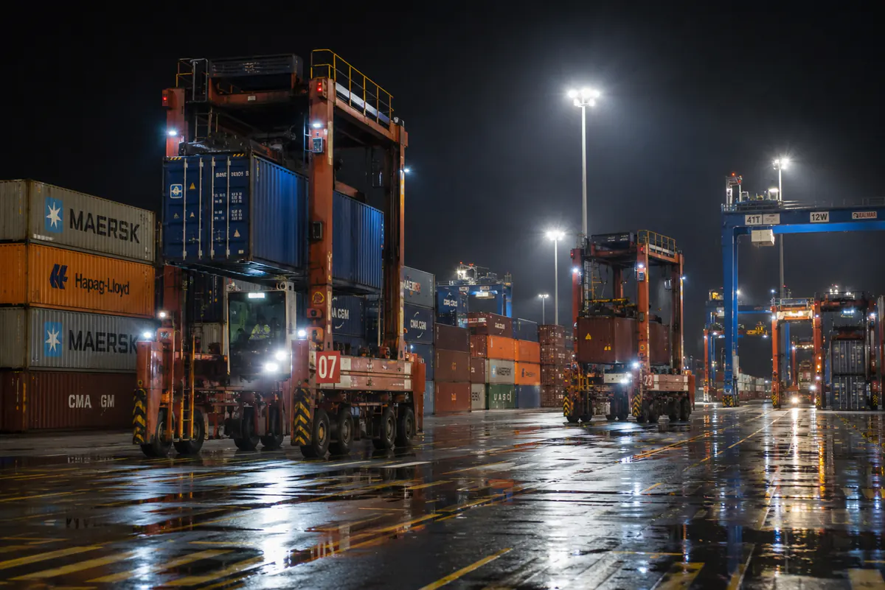
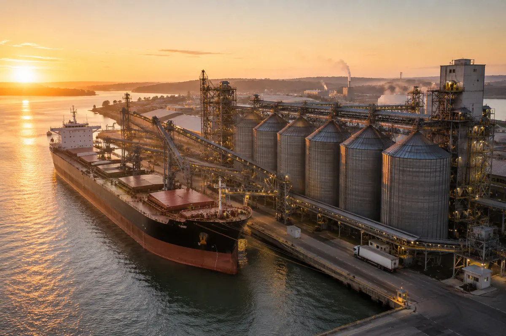
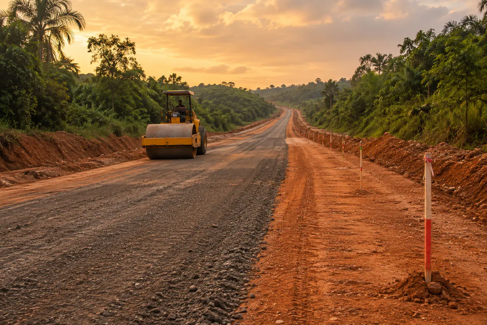
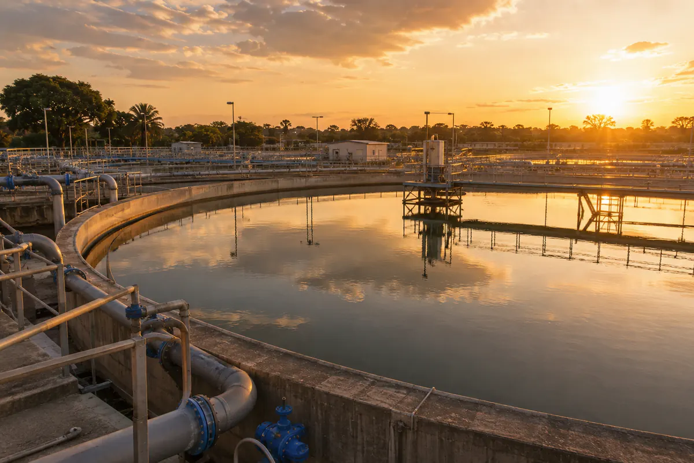

International Business & Development
We turn opportunities into
projects with a future
We identify opportunities, connect strategic partners, and take part in structuring and developing projects and businesses with an international outlook.
Infrastructure and development
Industry and logistics
Energy and resources
Urban and territorial development
Our vision
Opportunities gain value
when you know how to connect them.
Obras Cullera is a Spanish business and development company focused on identifying, structuring and developing business opportunities and projects with an international outlook.
We connect initiative, knowledge, capital and strategic partners to advance operations across different sectors and markets, taking part in each project with a structure adapted to its needs and objectives.
Where we create value
Four domains of
development and opportunity
We select opportunities where our ability to connect initiative, partners, knowledge and resources can help turn an opportunity into a viable project.
Infrastructure & development
Identifying, structuring and developing opportunities linked to infrastructure, public facilities, real-estate development and territorial transformation.
Discover
02Industry & market entry
Developing industrial opportunities and supporting companies as they establish themselves in new markets, connecting investment, partners and local capabilities.
Discover
03Aviation & connectivity
Developing and brokering opportunities linked to air connectivity, operators, new routes and international transport and mobility solutions.
Discover 04Investment & strategic opportunities
Identifying and structuring investment and business opportunities, building alliances and developing operations alongside strategic partners.
DiscoverOur platforms
One group,
four capabilities
Each platform holds its own engineering leadership, balance-sheet discipline and country teams — and they are designed to be combined on a single mandate.

Design-build and design-build-maintain contracts for national road corridors, bridges, civil works and public buildings. We take responsibility for constructability from the first feasibility study, and we price the twenty-year maintenance curve before we sign.

Solar and hybrid generation, medium-voltage distribution, potable water production and networks, sanitation and solid-waste systems. Delivered with metering, billing and operator training so that the asset is still solvent in year ten.
Haul roads, conveyors, stockyards, port interfaces and industrial estates for the mining and agro-industrial sectors — structured so that a share of processing, and therefore of margin, stays inside the host country.
Project structuring, concession and PPP documentation, blended-finance arrangement with development banks and export credit agencies, and the procurement transparency that lets a ministry defend a deal in public.
International scope
Spain, Africa and
the Middle East
Selected work
Projects in delivery
A ministry does not need a contractor. It needs a partner who will still be answering the telephone in year fifteen, when the warranty has expired and the road is still carrying trucks.
Our impact
Measured where
it is felt
We report against the United Nations Sustainable Development Goals on every mandate, and we publish the figures whether or not they flatter us.

Work with us
Bring us the problem
before it becomes
a tender
Our best work begins at the feasibility stage, when the scope, the financing structure and the maintenance model can still be designed together.